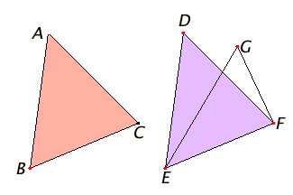

Proposizione I.8
Proposition I.8 (SSS - side-side-side)- If two triangles have the two sides equal to two sides respectively, and also have the base equal to the base, then they also have the angles equal which are contained by the equal straight lines.
Let ABC and DEF be two triangles having the two sides AB and AC equal to the two sides DE and DF respectively, namely AB equal to DE and AC equal to DF, and let them have the base BC equal to the base EF. I say that the angle BAC also equals the angle EDF.
If the triangle ABC is applied to the triangle DEF, and if the point B is placed on the point E and the straight line BC on EF, then the point C also coincides with F, because BC equals EF.
Then, BC coinciding with EF, therefore BA and AC also coincide with ED and DF, for, if the base BC coincides with the base EF, and the sides BA and AC do not coincide with ED and DF but fall beside them as EG and GF, then given two straight lines constructed on a straight line and meeting in a point, there will have been constructed on the same straight line and on the same side of it, two other straight lines meeting in another point and equal to the former two respectively, namely each to that which has the same end with it.
But they cannot be so constructed. I.7
Therefore it is not possible that, if the base BC is applied to the base EF, the sides BA and AC do not coincide with ED and DF CN 7. Therefore they coincide, so that the angle BAC coincides with the angle EDF, and equals it.
Therefore if two triangles have the two sides equal to two sides respectively, and also have the base equal to the base, then they also have the angles equal which are contained by the equal straight lines. □